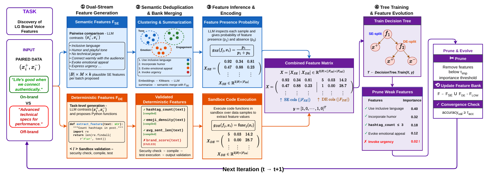
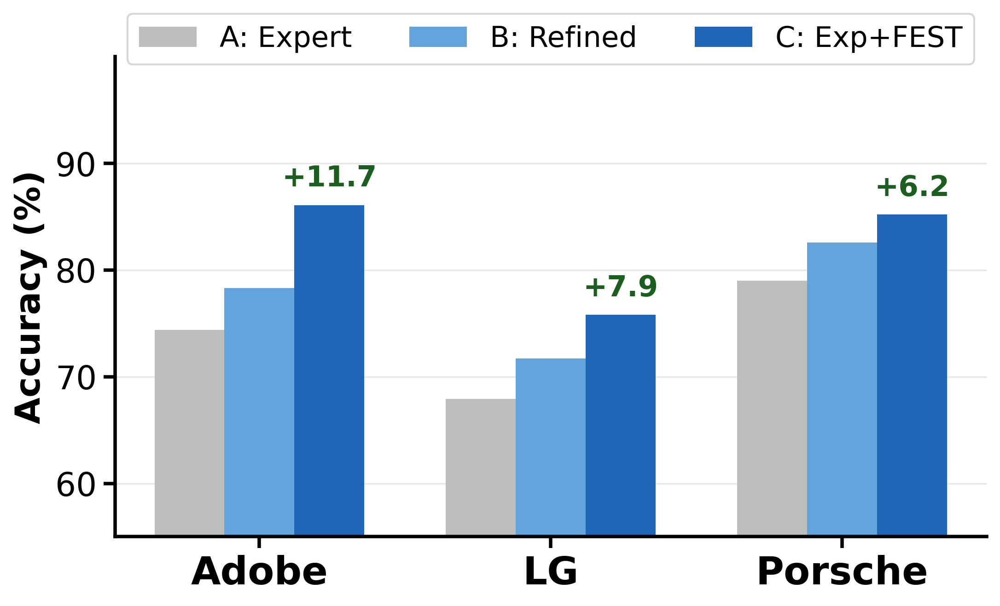
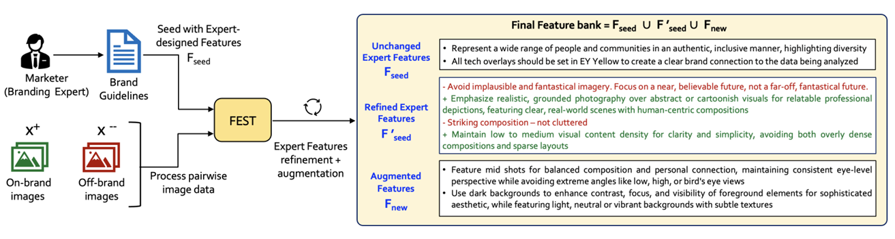

Bridging Expert Knowledge and Automated Feature Engineering via Self-Evolution
Get in touch with us at behavior-in-the-wild@googlegroups.com

Abstract
In high-stakes settings such as brand compliance, clinical care, and content moderation, machine learning cannot be deployed as opaque oracles: practitioners must be able to inspect the features driving model decisions, and models must be able to leverage the expert documentation already governing these domains. This requires features discovered from raw text and images to be interpretable, discriminative, and aligned with what experts consider important. Existing methods fall short: they target tabular inputs, lack demonstrated expert alignment, and cannot operationalize qualitative criteria such as “maintain professional tone” into precise features. To address these challenges, we present FEST (Feature Engineering with Self-evolving Trees), which combines dual-stream feature generation (semantic and deterministic), semantic deduplication, and tree-guided iterative evolution to discover features directly from unstructured data. FEST leads in 17 of 20 classifier-task combinations across brand classification (text and images), content authenticity detection, and stress detection, with a mean gain of 4.2 pp over the strongest baseline across five classifiers. An LLM-as-judge evaluation shows FEST achieves 60–80% coverage of expert-designed brand features at strict semantic-alignment thresholds, corroborated by a human expert study rating FEST features highly on relevance, clarity, and actionability. When seeded with expert guidelines, FEST refines qualitative criteria into precise, operational features, improving downstream accuracy by 6–12 pp on average across brands. To enable systematic evaluation of expert alignment in automated feature engineering, we release BrandGuide, the first dataset pairing expert-designed features with 1M+ assets across 2,683 brands. By grounding automated feature engineering in expert knowledge, FEST opens a practical pathway for deploying interpretable ML in domains that demand human oversight and accountability.
Key Contributions
- Problem Formalization: We formalize a deployment-critical problem: producing interpretable features from unstructured data that domain experts recognize as meaningful, and operationalizing expert documentation when available. We bring this problem to the community and propose expert alignment as a measurable objective for automated feature engineering.
- BrandGuide Dataset: To enable systematic evaluation of expert alignment in automated feature engineering, we release BrandGuide, the first dataset pairing expert-designed features with unstructured content: 1M+ assets across 2,683 brands, 80 sectors, and 103 regions.
- FEST Framework: We propose FEST, combining dual-stream feature generation (semantic and deterministic), semantic deduplication via conditional embeddings and clustering, and tree-guided iterative evolution using importance-based pruning. FEST leads in 17 of 20 classifier-task combinations across five classifiers (mean gain 4.2 pp), while maintaining interpretability.
- Expert Alignment: FEST achieves 60–80% coverage of expert features under strict LLM-as-judge thresholds. A human expert study corroborates this (above 3.8/5 on relevance, clarity, actionability).
- Expert Operationalization: With expert seeds, FEST operationalizes qualitative criteria into more precise features, improving accuracy by 6–12 pp on average across brands.
Results
FEST is evaluated across brand classification (text and images), content authenticity detection, and stress detection using five classifiers (DT, LR, RF, MLP, XGB). Accuracy below is averaged across all five classifiers; per-classifier breakdowns in Appendix E.
| Method | Brand Cl. (Text) | Brand Cl. (Images) | Content Auth. | Stress Det. |
|---|---|---|---|---|
| Zero-Shot LLM | 75.6 | 70.6 | 79.8 | 73.3 |
| Few-Shot LLM | 77.8 | 74.7 | 73.9 | 72.8 |
| Felix | 78.1 | 69.7 | 87.5 | 79.1 |
| FEST (Ours) | 82.9 | 79.3 | 91.0 | 80.5 |
- FEST also achieves 60–80% coverage of expert brand features under strict LLM-as-judge evaluation (threshold ≥7)
Expert Knowledge Operationalization
Using brand style guidelines as seed features, FEST operationalizes qualitative criteria into precise, measurable features and discovers complementary patterns. The chart below disentangles the contributions of refinement and augmentation across three brands, averaged over DT, LR, RF, and LLM classifiers.


BibTeX
@misc{khurana2026bridgingexpertknowledgeautomated,
title={Bridging Expert Knowledge and Automated Feature Engineering via Self-Evolution},
author={Varun Khurana and Vijval Ekbote and Vashu Chauhan and Yaman Kumar Singla and Rajiv Ratn Shah and Balaji Krishnamurthy},
year={2026},
eprint={2606.08800},
archivePrefix={arXiv},
primaryClass={cs.AI},
url={https://arxiv.org/abs/2606.08800},
}